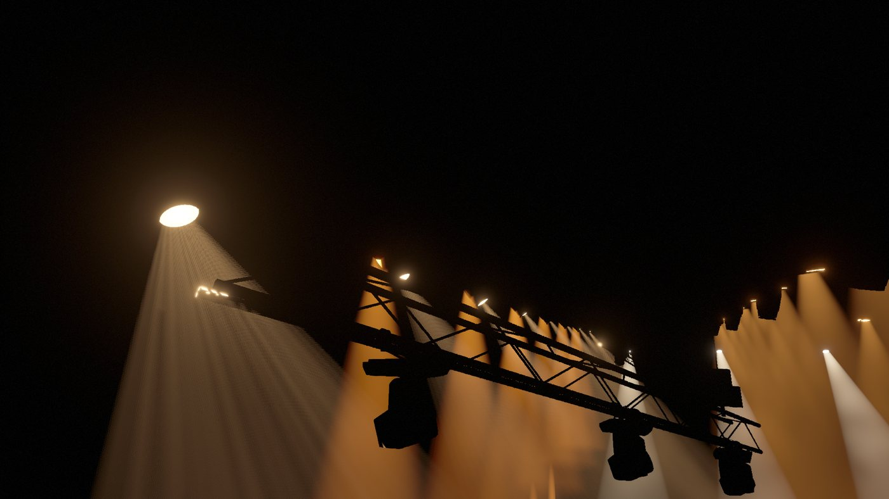

Tasarım sistemi · taslak
Karanlık sahne,
tek ışık.
LampOff’un bütün sayfaları bu sayfadaki parçalarla kurulacak. Zemin kırık koyu gri, vurgu tek renk: mavimsi turkuaz; çizgiler ışık planı gibi ince, etiketler sahne bandı gibi. Yeni bir şey gerekirse önce buraya parça olarak eklenir, sonra sayfalarda kullanılır.
Renkler
Zemin kırık koyu gri; vurgu turkuaz (seçili menü, düğme, etiket). Yeşil, mavi, turuncu yalnız durum için.
Yazı
Başlıklar dar (Barlow Condensed), metin Barlow. Fazla boy yok: 5 ölçü yeter.
Etiket · 12,5 px büyük harf
Sahne ışığı
Sayfa başlığı
Bölüm başlığı
Kart başlığı
Giriş paragrafı: biraz büyük, ikincil renkte, en fazla iki üç satır.
Gövde metni. Fixture, Ch, Truss, Focus gibi terimler her dilde aynı kalır.
Bant etiketi
Her bölümün üstündeki küçük işaret. Turkuaz paralelkenar = sahneye yapıştırılmış bant; LampOff’un imzası.
Plan ve asma noktaları
LampOff Studio · Yakında
Bölüm başlığı
Bant etiketi + başlık + bir cümle. Solda ya da ortada.
Uyumluluk
Konsollara ve çizim programlarına
Proje dosyası bu sistemlerle karşılıklı taşınır.
Evraklar
Turneye hazır evrak seti
Ölçekli plandan magic sheet’e kadar bütün sayfalar aynı projeden.
Düğmeler
Sayfada tek bir dolu (turkuaz) düğme olur: asıl iş. Diğerleri çerçeveli ya da yazı + ok.
Durum rozeti
DMX ışığı gibi nokta + tek kelime. Bir şeyin hazır mı, deneniyor mu olduğunu söyler.
Kart
İkon + başlık + bir cümle. Üçlü ya da dörtlü ızgara. Tıklanabilir kart üstüne gelince turkuaz çerçeve alır.
Plan
Sahne, truss ve fixture’lar gerçek ölçüsüyle.
3D
Haze, hüzme ve gobo; plan değişince 3D de değişir.
Patch
Universe, adres ve çakışma uyarıları tek listede.
Tıklanabilir kart
Rozetli örnek.
Görsel çerçevesi
Yuvarlak köşe, ince çizgi; açıklama görselin üstüne, alttan karararak yazılır.


Sahne görseli
Program ekranını belli etmeden göstermek için: arkada büyük 3D, önde eğik ve solan küçük arayüz.
 3D sahne: haze, hüzmeler ve seyirci
3D sahne: haze, hüzmeler ve seyirciGörsel + yazı satırı
Özellik anlatmanın ana yolu. Sırayla bir sağ bir sol.

Plan ve asma noktaları
Ölçekli plan, gerçek truss
Sahne, truss ve tower’lar gerçek ölçüleriyle kurulur. Her fixture’ın Ch’i, DMX adresi ve filtresi planda yazar.
- İtalyan sahne, black box, arena şablonları
- Binlerce fixture modeli, GDTF gövde ve sembolleri
- Önden ve yandan görünüşte yükseklik
Sayılar
Büyük dar rakam, altında birim. Hafif ışık parlaması.
Özellik tablosu
Teknik bilgiler, gereksinimler, sürüm. Sol kalın, sağ ikincil renk.
- Platformlar
- Android, iPhone, iPad · Windows ve macOS yakında
- Sürüm
- 7.12.7 · 14 Kasım 2026
- Fiyat
- Ücretsiz, reklamsız
Adımlar
Sıralı işler: kurulum, beta katılımı, dönüştürme. Numara turkuaz, dar rakam.
- Gmail adresini gönder.Google Play’de kullandığın adresi yaz.
- Test listesine eklenir.Google Play bağlantısı o hesapta açılır.
- Google Play’den yükle.Güncellemeler kendiliğinden gelir.
Not kutusu
Önemli bir bilgi ya da çağrı. Turkuaz çizgi = bilgi, yeşil = katıl / hazır.
Her dönüşüm kontrol edilir
Kaynak show’daki her cue’nun DMX değerleri yenisiyle karşılaştırılır.
Sık sorulanlar
Açılır kapanır satırlar; artı işareti dönerek çarpı olur.
LampOff ücretli mi?
İnternet gerekli mi?
Sekmeler
Aynı sayfada iki üç seçenek (Android / iPhone).
Seçili sekmenin içeriği.